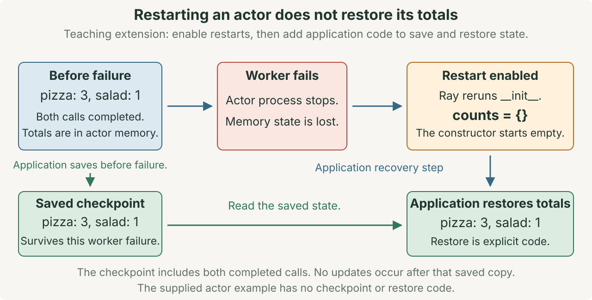

Spark and Ray in depth
A fictional classroom investigation
Maya opens the student club’s lunch orders: “Pizza, pizza!” and “Salad pizza.”. Noor points to their Python word count.
We know the total. Which parts could different workers do?
Each word requests one meal. These two toy orders produce three pizzas and one salad.
MapReduce explains how contributions become a complete total. Spark and Ray provide different ways to schedule work around that computation.
Starting knowledge: Python functions, lists, dictionaries, SQL grouping, and map → shuffle → reduce. Lecture 13 focuses on MapReduce. This lecture develops its short Spark and Ray preview. The opening check reviews the grouping rule.
Goal: Trace a Spark job and a Ray program. Explain where data moves, which work can overlap, and what a retry can repeat.
Use 60 minutes for the visual lecture and 15 minutes for the closing investigation. This session has no quiz.
Lab 11 meets Tuesday November 17. Quiz 10 covers MapReduce, Spark, and Ray on Thursday November 19.
The first worker finds two pizzas. The second finds one pizza and one salad. Is either pizza count the club’s final total?
Check your explanation
No. The complete pizza total needs both contributions: 2 + 1 = 3. Grouping connects work across the two inputs.
The numbered sections follow the slide sequence. Each diagram includes its explanation and its own Next and Previous controls. Use them to follow the mechanism without opening the slides. The complete Spark and Ray programs remain available below.
1 · More capacity requires coordination
Our two lunch orders need only a loop. Spark and Ray become useful when a workload exceeds the available time or resources.
A worker is a program process that runs assigned work. A framework supplies reusable software for coordinating that work. Its running coordination software is also called the runtime. A cluster is a group of computers working together.
Recall the illustrative meal-demand report: scan 10 TB within 10 minutes. At 2 GB/s, one machine needs 5,000 seconds, or about 85 minutes, just to read the input.
With balanced input and independent disks, 100 machines reading at 2 GB/s each have an ideal scan time of 50 seconds. That is about 1 minute, before coordination, data transfer, and processing costs. This is a capacity estimate, not a measured speedup.
We could assign inputs, transfer results, and recover failed work ourselves. Spark and Ray supply software for those repeated coordination tasks.
A data pipeline is a sequence of operations on data. A dependency means one operation needs a result from another operation. Counting words depends on first extracting those words from the orders.
| Familiar organization | System mechanism | What you specify |
|---|---|---|
| A recipe applied to many trays of orders | Spark runs operations over portions of a collection. | The data operations and which results they need |
| Helpers receive separate jobs and return answers | Ray Core schedules Python function calls. | The calls, their inputs, and how results combine |
The comparison explains organization. Computer workers also need resources, data transfer, and recovery rules. A helper’s paper tray does not explain those costs.
Keep the correct local answer as the baseline, or comparison result. Both implementations must preserve pizza 3 and salad 1. Our tiny fixture reveals the work, but it does not need a cluster.
2 · Spark: the driver schedules executor work
A partition is a portion of a dataset. Our example starts with two partitions, each containing one order. A task is assigned computation on a partition.
The driver runs the main program and coordinates the application. Executors are processes that run its tasks and retain its data. One executor can run many tasks over time. A task can apply several operations to the records in its partition.
In a cluster, a cluster manager allocates resources to applications. Spark’s driver schedules tasks on the application’s executors. These roles do not imply one computer per partition. [1]
Think of the driver as the organizer assigning trays to helpers. Executors are the helpers, partitions are trays of records, and tasks are instructions for processing those trays.
The collect() operation requests all result records at the driver. Our two meal totals fit easily. A large result can exceed driver memory, so use distributed output files or a bounded sample instead.
The example uses local[2]: Spark runs locally with two worker threads, or paths of execution within one computer. It demonstrates scheduling without creating a two-machine cluster.
If one executor finishes partition 0, can it later process partition 1?
Check your explanation
Yes. A partition identifies data, while an executor runs assigned tasks. One executor can process different partition tasks over time.
3 · RDD transformations describe work
A resilient distributed dataset (RDD) is Spark’s collection of records divided into partitions. In this example, each record is an order string.
A transformation describes a new RDD without changing its input RDD. An action requests a result and starts the computation needed for that result. Think of writing the recipe first, then asking the helpers to prepare its result.
| Operation | Effect on the lunch orders | Role |
|---|---|---|
flatMap | Turn each order into separate meal names. | Transformation |
map | Turn each meal into (meal, 1). | Transformation |
reduceByKey | Add contributions with the same meal key. | Transformation |
collect | Return all result records to the driver. | Action |
Lazy evaluation means these transformations wait until an action needs their results. Creating counts records the work needed for the totals. Calling counts.collect() requests those totals. [2]
Spark records a directed acyclic graph (DAG) of dependencies. Each node represents a collection or operation, and each arrow follows a dependency toward its result. Acyclic means following arrows cannot return to the same node. The graph records how to compute results, rather than requiring every result to be stored already.
Does reduceByKey start the job because its name contains “reduce”?
Check your explanation
No. It describes another RDD. An action such as collect() requests execution. Describing a total and computing that total are separate steps.
4 · flatMap and map keep every occurrence
Return to “Pizza, pizza!”. The helper function split_order lowercases the letters and separates words at punctuation. It returns the list ["pizza", "pizza"].
flatMap applies that function to each order, then places each returned word into the output collection. The two words become separate records. In contrast, map(split_order) would keep the returned list as one record for that order.
Next, map applies a function once to each individual word. It turns each word into (meal, 1). The key names the meal, and the value 1 represents one request. An occurrence is one appearance of a meal name.
The two orders produce four pairs: three pizza pairs and one salad pair. Both pizza occurrences in order 0 must survive. Keeping only distinct words would discard a requested meal.
These operations are local: each task processes records already available in its partition. The task does not need the other order to extract its own words.
5 · Combine local counts before sending them
Partition 0 contains two (pizza, 1) pairs. Can it send their sum instead? For an integer count, (pizza, 2) preserves both requests.
Aggregation combines values into a summary, such as a count. A partial result summarizes only part of the input. Spark’s reduceByKey combines matching keys locally before shuffling their contributions. [4]
Partition 0 supplies (pizza, 2). Partition 1 supplies (pizza, 1) and (salad, 1). Three pairs still represent four requests. A contribution’s weight is the number of requests that its value represents.
The partial sum replaces its original pairs. Sending both would count those requests twice. The final calculation adds values, not the number of pairs.
Integer addition is associative: regrouping additions preserves the sum. It is also commutative: changing their order preserves the sum. These properties let Spark combine partial counts in different groups and orders.
Other calculations need enough information in each partial result. For an average, retain (sum, count), merge both fields, then divide. Lecture 13’s delivery example shows why averaging unequal groups’ averages loses information.
6 · The shuffle separates two stages
Partition 0 knows two pizza requests. Partition 1 knows a third. The shuffle redistributes contributions by key so the final calculation can include both partitions.
A stage groups partition tasks whose operations can run without a shuffle between them. A shuffle separates stages. A Spark job is the computation requested by an action. The driver divides that job into stages and schedules their tasks. [1]
Stage 0 extracts words, creates pairs, and adds matching local values. The shuffle brings pizza values 2 and 1 together. Stage 1 adds them to produce pizza 3. Salad’s single value produces 1.
The figure gives each meal a separate destination for clarity. In an actual run, two keys can share a partition while retaining separate value groups. Each key still needs its complete total.
Static diagram of the complete Spark count

Shuffle work includes converting records into bytes, transferring them, and possibly reading or writing disk files. Simple final arithmetic does not make those costs disappear.
Run the complete Spark example
SparkContext is the program’s connection to Spark’s RDD execution system. parallelize(orders, numSlices=2) creates an RDD from the Python list with two input partitions.
The add function adds two values. reduceByKey(add, numPartitions=2) requests two result partitions. That count is separate from the input partition count, even though both are two here.
Predict the final dictionary and identify the action before running the program.
Download spark_lunch.py. Install pyspark and a Java version supported by that installation. Then run python3 spark_lunch.py. See the PySpark installation requirements.
"""Count a tiny lunch fixture with Spark on this computer."""
import argparse
import re
from operator import add
from pyspark import SparkContext
def split_order(order):
"""Return one word per meal request, including repeats."""
return re.findall(r"[a-z]+", order.lower())
def main():
parser = argparse.ArgumentParser(description=__doc__)
parser.add_argument(
"--plan", action="store_true", help="Print the RDD dependencies."
)
args = parser.parse_args()
sc = SparkContext(master="local[2]", appName="Lunch counts")
try:
orders = ["Pizza, pizza!", "Salad pizza."]
source = sc.parallelize(orders, numSlices=2)
# These transformations describe work. They do not start the count.
meals = source.flatMap(split_order)
pairs = meals.map(lambda meal: (meal, 1))
counts = pairs.reduceByKey(add, numPartitions=2)
if args.plan:
print(counts.toDebugString().decode("utf-8"))
# collect starts the job and brings this small result to the driver.
totals = dict(sorted(counts.collect()))
print("Totals:", totals)
finally:
sc.stop()
if __name__ == "__main__":
main()Expected output: Totals: {'pizza': 3, 'salad': 1}. Startup logs can vary. This toy input explains execution, not a performance advantage.
Inspect the plan: run python3 spark_lunch.py --plan. Find ShuffledRDD, which identifies the redistribution dependency. Its surrounding dependencies connect work before and after the shuffle.
Optional Lab 11 example: word count over 4,000 abstracts
The optional Spark exercise uses the same operations on arXiv abstracts. The excerpt assumes re is imported and lines is an RDD with four partitions.
Predict where the shuffle occurs. Then compare the code with the printed dependency plan.
counts = (lines # an RDD, split into 4 partitions
.flatMap(lambda t: re.findall(r"[a-z]+", t.lower())) # your map_words
.map(lambda word: (word, 1))
.reduceByKey(lambda a, b: a + b)) # your shuffle + reduce, one call11
counts.collect() # NOW it runs$ python3 spark_wordcount.py # Part B, on the 4,000 arXiv abstracts
=== the DAG (read bottom-up; the stage break is the shuffle) ===
(4) PythonRDD[5] at RDD at PythonRDD.scala:59 []
| MapPartitionsRDD[4] at mapPartitions at PythonRDD.scala:197 []
| ShuffledRDD[3] at partitionBy at NativeMethodAccessorImpl.java:0 []
+-(4) PairwiseRDD[2] at reduceByKey at spark_wordcount.py:37 []
| PythonRDD[1] at reduceByKey at spark_wordcount.py:37 []
| ParallelCollectionRDD[0] at readRDDFromFile at PythonRDD.scala:326 []Start at ParallelCollectionRDD, the input collection at the bottom. Read upward toward the result. Find ShuffledRDD, which marks the redistribution step. That shuffle separates the work into stages.
The printed identifiers and source line numbers can vary between Spark versions. The shuffle boundary is the feature to explain.
7 · Partitions, tasks, and workers differ
Now use a separate scheduling example with four partitions and two execution slots. An execution slot represents capacity to run one task at a time in this illustration. It is not another partition or a required separate computer.
In a stage, Spark schedules one task for each required partition. Two slots can run at most two of these tasks together. Four ready tasks therefore need at least two waves. Actual task durations can differ.
In a dependency, parent means the input collection, and child means the collection produced from it. A narrow dependency lets each parent partition contribute to at most one child partition. Our flatMap and map keep each order’s processing within its partition. They can run together in one task without a shuffle between them.
A wide dependency can send one input partition’s contributions to several output partitions. Grouping meal keys across inputs requires the shuffle in our example. The dependency arrows describe data requirements, not the number of machines. [3]
Running consecutive operations within one task is called pipelining. A narrow dependency allows this without a shuffle, but does not promise that input data never crosses a network.
| Dependency | Examples | What the tasks need |
|---|---|---|
| Narrow | flatMap, map, filter | Process assigned input without redistributing it between these operations. |
| Wide | reduceByKey, join, groupBy, when redistribution is needed | Receive contributions from other partitions before completing the grouped result. |
Change numPartitions=2 to numPartitions=4. Must the lunch count run twice as fast?
Check your explanation
No. There are still only two keys, and some result partitions can be empty. Available resources limit overlap. More tasks also add scheduling costs. The totals must remain pizza 3 and salad 1.
8 · Cache reusable data and rebuild lost output
Maya wants two reports from the same cleaned orders. The meals RDD contains the lowercase meal names extracted from both orders. Repeating that extraction for every report may waste work.
Persistence asks Spark to retain computed partitions for reuse. meals.persist() marks that intention. It does not immediately compute the records. cache() is a convenient way to request the default persistence behavior.
An action computes the partitions it needs and saves them according to the selected storage policy. A later action can reuse the retained values. meals.unpersist() releases them when they are no longer useful. [7]
Run these lines after defining meals and before stopping the Spark context:
meals.cache() # Request storage when values are computed.
print(meals.count()) # Compute all partitions: 4 meal requests.
print(meals.take(2)) # Reuse saved values: ["pizza", "pizza"].
meals.unpersist() # Release the retained partitions.The count() action returns the number of elements. The take(2) action returns the first two elements. Both request values, but neither changes the meal requests.
Think of keeping prepared ingredients for another meal. Retaining data saves repeated preparation, but consumes space. Caching every result can leave less memory for useful work.
Lineage is Spark’s record of the steps needed to rebuild an RDD partition. The cache holds computed data. Lineage describes how to compute that data again. If a cached partition is lost, Spark can rebuild it when its required inputs remain available. [3]
Reproducing the same values also requires repeatable transformations: the same inputs must produce the same outputs. The fixed word-extraction rules in our example satisfy that condition.
The diagram separates three events: request caching, compute and retain values, then rebuild a lost partition. Losing the cached copy does not change the intended meal counts.
If every copy of a required original order disappears, does lineage contain the missing order?
Check your explanation
No. Lineage records operations and dependencies, not a backup of unavailable input. Rebuilding requires an available source or another saved copy.
9 · A frequent key can delay a stage
Consider a larger, hypothetical order collection. Skew means work is distributed unevenly. A hot key accounts for much of the data or activity. Many pizza requests can concentrate work at one destination.
One task may then remain busy after others finish. The stage waits for the required task to complete. The diagram’s bars show a possible imbalance, not measured durations.
The Spark UI is Spark’s browser interface for inspecting execution. Compare task duration, input sizes, and shuffle volume, which is the amount of redistributed data. Spill means writing temporary data to disk when the task cannot keep it all in memory.
Local addition can greatly reduce traffic for this simple count. Other calculations may retain larger groups. A long task can also result from slow hardware or expensive per-record processing.
Increasing partition count does not automatically divide one key’s final reduction. Salting temporarily splits a key into subgroups, then combines their results. Use that extra work only when the operation supports correct partial results and measurements justify it.
Does one long-running task prove that pizza occurs too often?
Check your explanation
No. Compare input sizes, processing time, spill, and resource use. A slow machine can delay a task even when its input is small.
10 · Use DataFrames for structured operations
We used RDDs to expose the execution mechanism. For table queries, Spark can also understand the structure of the requested operations.
A DataFrame represents records as named columns. Its schema specifies column names and types. Relational operations include familiar SQL filters, joins, and grouped counts. Spark SQL can use their structure to choose an execution plan. [5]
Suppose splitting the orders into words has already produced a meals table. Its four rows contain pizza, pizza, salad, and pizza.
SELECT meal, COUNT(*) AS requests
FROM meals
GROUP BY meal;SparkSession is the entry point for Spark’s table and SQL operations. createDataFrame builds the example table. Run this separate program to create the rows and request the grouped counts:
from pyspark.sql import SparkSession
spark = (
SparkSession.builder.master("local[2]")
.appName("Lunch table")
.getOrCreate()
)
meals = spark.createDataFrame(
[("pizza",), ("pizza",), ("salad",), ("pizza",)], ["meal"]
)
totals = meals.groupBy("meal").count()
totals.explain(mode="formatted")
totals.show()
spark.stop()The answer remains pizza 3 and salad 1. Row order is unspecified. show() requests execution and displays results.
explain() displays the execution plan. Look for partial aggregation, which counts local rows, an Exchange, and final aggregation. An exchange redistributes data. Final aggregation combines the received partial counts. Exact labels depend on the Spark version and configuration. [6]
Structured expressions tell Spark which columns and operations are involved. An arbitrary Python function can hide those details. This gives Spark more planning information, but does not guarantee that every DataFrame program runs faster.
11 · Ray task calls return result references
Maya now gives each helper one order to count independently. Each helper returns a dictionary. Her program must add matching counts from those dictionaries.
A Ray task is a function call that Ray schedules on a worker process. The @ray.remote annotation makes a function available for those scheduled calls. Remote means Ray chooses where to execute the call. It can still run on the same computer.
count_order.remote(order) submits work and returns an ObjectRef: a reference identifying a result that may still be pending. Like a claim ticket, the reference identifies something you can retrieve later. It is not the result dictionary.
ray.get(ref) retrieves the value, waiting if necessary. Submission does not guarantee immediate execution. Tasks still need available resources and any required input values. [8]
ray.get(refs) returns results in the order of the supplied references, even if tasks finish in a different order. The driver then adds matching counts. Ray Core does not infer this meal-grouping operation from our function calls.
Static diagram of the complete Ray count

Run the complete Ray example
Download ray_lunch.py. Install ray in your Python environment. Then run python3 ray_lunch.py.
"""Count a tiny lunch fixture with Ray on this computer."""
import re
import ray
@ray.remote
def count_order(order):
"""Count every meal request in one order."""
counts = {}
for meal in re.findall(r"[a-z]+", order.lower()):
counts[meal] = counts.get(meal, 0) + 1
return counts
def main():
ray.init(num_cpus=2, include_dashboard=False)
try:
orders = ["Pizza, pizza!", "Salad pizza."]
# Submit both tasks before waiting for either result.
refs = []
for order in orders:
refs.append(count_order.remote(order))
# The driver waits for both dictionaries, then combines their counts.
partials = ray.get(refs)
totals = {}
for partial in partials:
for meal, count in partial.items():
totals[meal] = totals.get(meal, 0) + count
print("Task results:", partials)
print("Totals:", dict(sorted(totals.items())))
finally:
ray.shutdown()
if __name__ == "__main__":
main()Expected final line: Totals: {'pizza': 3, 'salad': 1}. Each task counts one order. The driver’s loop adds both dictionaries into the final result.
The code uses two local CPU resources for scheduling on one computer. These tiny tasks explain execution and may cost more to schedule than to run.
The merge loop adds counts instead of replacing dictionary entries. An ordinary dictionary update could replace pizza’s first contribution with its second, losing part of the total.
12 · Submit independent work before waiting
Both orders can be counted independently. The driver can still prevent overlap if it waits after each submission.
Here, blocking means the driver cannot proceed past the wait until the result arrives. Concurrency means calls can remain in progress during overlapping periods. Actual simultaneous execution also requires enough resources.
# This driver waits before submitting the next order.
partials = []
for order in orders:
partials.append(ray.get(count_order.remote(order)))
# This driver submits both orders before waiting.
refs = [count_order.remote(order) for order in orders]
partials = ray.get(refs)The first loop waits for one order before submitting the next. The second submits both before waiting, so Ray can overlap eligible calls. It still waits for both results before merging them. [9]
For millions of tasks, limit outstanding work: tasks submitted but not yet collected. Process them in batches, or groups of inputs. Submitting every task at once can exhaust memory. The two-task example isolates the wait rule.
Both calls are submitted, but only one worker can run a task. Will the calls necessarily overlap?
Check your explanation
No. Submission makes both calls eligible. One may wait for resources. Moving the wait permits concurrency without guaranteeing it or promising a speedup.
Optional Lab 11 example: independent searches and a recorded timing
The optional Ray exercise gives each task one abstract. The task finds its ten nearest neighbors among 4,000 stored vectors. These vectors represent the abstracts as lists of numbers for comparison.
Each search can finish without another search’s answer. Compare its results with a serial run, where one call finishes before the next begins. The excerpt assumes the lab has already defined neighbors and docs.
@ray.remote # this function may run anywhere
def knn_remote(doc):
return neighbors(doc) # 10 nearest abstracts, brute force over 4,000 vectors
futures = [knn_remote.remote(d) for d in docs] # all launched, returns instantly
graph = ray.get(futures) # wait; order preserved13The variable futures holds result references. Here, “launched” means submitted, not necessarily running. Submission returns without waiting for task results, but still takes some time. ray.get(futures) returns results in the order of those references.
Speedup compares elapsed times: divide the serial run’s time by the parallel run’s time. A serial run finishes one call before starting the next.
Recorded course measurement: 3.5× measured speedup on a 10-core laptop: 2.27 s serial and 0.66 s parallel. Both runs returned identical results.
$ python3 ray_speedup.py # Part C, measured on a 10-core laptop
200 documents, 10 nearest neighbors each, brute force over 4,000 vectors
serial: 2.27 s
parallel: 0.66 s speedup: 3.5x
identical results: True
neighbors of [Fine-Grained Table Retrieval Through the Lens of Complex Que]:
Decomposition-Driven Multi-Table Retrieval and Reasoning for Numerical
Novel Table Search [Technical Report]
Toward Multi-Database Query Reasoning for Text2CypherThis measurement uses Lab 11 Part C. It is not a timing prediction for your machine. The figures describe the search workload above, not the two lunch orders.
Submit the tasks before waiting for their results. This permits overlap when resources are available. The optional lab check verifies that the submission loop does not wait after each task. [9]
13 · A result reference expresses a dependency
Now change the task: a second function must summarize the first function’s count dictionary. It cannot summarize a value that does not exist yet.
The first task is the producer of that value. The second is its consumer. Pass the producer’s reference directly as an argument to the consumer:
Reuse count_order from the Ray example in an initialized Ray session. Define summarize to add the values in one count dictionary:
@ray.remote
def summarize(partial):
return sum(partial.values())
first_ref = count_order.remote("Pizza, pizza!")
second_ref = summarize.remote(first_ref)
print(ray.get(second_ref)) # 2 meal requestsThe consumer receives {'pizza': 2} and returns 2. Its result counts the meal requests in that one order.
A top-level argument is passed directly to the call, rather than inside a list or dictionary. Ray waits until that referenced value is available, then supplies the actual dictionary to summarize. This is called resolving the reference. [10]
The consumer receives {'pizza': 2}, not an unfinished ObjectRef. The driver can wait for second_ref at the end without calling ray.get(first_ref) between submissions.
The claim-ticket analogy only explains identification. Ray also uses a direct reference argument to delay the consumer until its input is ready. References nested inside lists or dictionaries are not automatically replaced with their values in the same way.
Can the driver submit the consumer before the producer finishes?
Check your explanation
Yes. Ray records the dependency. The consumer’s function waits to execute until its required value is available.
14 · Put a reusable input in the object store
Extend the lunch application to check orders against a large menu. This is a separate teaching example. Both checking tasks need the same menu, but receive different orders.
Ray’s object store holds values that tasks can retrieve through references. ray.put(data) stores a value and returns an ObjectRef. For the menu, save that reference as menu_ref.
Pass menu_ref directly to each checking task. Each task receives the menu value after Ray resolves the reference. Reusing the reference avoids repeatedly submitting the same large value. Data may still need transfer to another machine. [10]
Reuse split_order from the Spark example in an initialized Ray session. The function only extracts words, so it also works inside a Ray task.
The check_order task returns True when every requested meal appears in the menu. This two-item menu makes the code easy to inspect:
@ray.remote
def check_order(order, menu):
return all(meal in menu for meal in split_order(order))
menu = {"pizza", "salad"}
menu_ref = ray.put(menu)
first_ref = check_order.remote("Pizza, pizza!", menu_ref)
second_ref = check_order.remote("Salad pizza.", menu_ref)
print(ray.get([first_ref, second_ref])) # [True, True]Ray’s stored objects are immutable: a stored value does not change in place. A shared reference therefore does not create a dictionary that all tasks can edit together. It identifies a stored value.
Lab connection: several nearest-neighbor tasks need the same vector collection. A reference can identify that input while each task receives a different query ID. Two short lunch strings do not need this optimization.
15 · An actor keeps state between calls
The club collects another order. Maya wants one helper to remember the running totals between calls.
A Python class defines how an object stores data and responds to calls. An instance is one object created from that class. Its stored values are its state. A method is a function called on that object.
A Ray actor keeps a class instance in a worker process. Its methods can read and change that instance’s state. This is mutable state: values can change between calls. [11]
Our counter starts with an empty dictionary. The first method call adds two pizzas. The second adds one pizza and one salad. Predict the state after both calls.
An ordinary synchronous actor runs one method at a time. For this example’s calls from one driver, without retries or out-of-order options, methods execute in submission order.
MealCounter.remote() creates the actor and returns a handle used to call its methods. The constructor, __init__, sets its initial state. Each add.remote(...) call returns a reference to that call’s result.
import ray
@ray.remote
class MealCounter:
def __init__(self):
self.counts = {}
def add(self, partial):
for meal, count in partial.items():
self.counts[meal] = self.counts.get(meal, 0) + count
return dict(self.counts)
ray.init(num_cpus=2, include_dashboard=False)
try:
counter = MealCounter.remote()
first = counter.add.remote({"pizza": 2})
second = counter.add.remote({"pizza": 1, "salad": 1})
print(ray.get([first, second]))
finally:
ray.shutdown()Expected output: [{'pizza': 2}, {'pizza': 3, 'salad': 1}]. The second call sees the first call’s state change. Each returned dictionary is a snapshot of the totals after that call.
The actor’s internal dictionary can change. Earlier returned snapshots do not change when a later call updates the actor. This separates mutable actor state from immutable stored results.
One actor can become a bottleneck: its serial methods limit how quickly all updates finish. Multiple actors have separate states. Ray also supports explicit concurrency modes with different ordering rules.
Use an actor for state that should remain with a worker, such as a loaded model or running totals. Use independent tasks when calls need no shared mutable state. Keeping state between calls does not ensure that it survives a worker failure.
16 · A retry can repeat an external effect
A retry executes assigned work again after a failure. Each execution is an attempt. Our count_order function returns counts without changing another system.
A pure function returns a result determined by its input and changes no external state. Repeating our pure count can reproduce {'pizza': 2}. A side effect changes something outside the returned result, such as appending a receipt to a file.
Suppose a task appends that receipt, then its worker fails before reporting completion. The next attempt may append the receipt again. Receiving one successful task result does not prove the receipt was written only once.
An idempotent operation has the same intended effect when repeated as when performed once. A stable request ID can identify the same intended receipt across attempts. Deduplication checks that identity to prevent applying the same request twice.
This protection needs an application design that preserves the request identity and safely records completed effects. An ID alone does not supply those guarantees. A repeated payment request has the same concern.
Task retry, actor restart, and state recovery are different
A retry policy specifies which failures to retry and how many attempts to permit. A worker failure differs from an application exception, an error raised by the function’s own code.
For ordinary Ray tasks, max_retries controls retries. retry_exceptions controls whether application exceptions are eligible. These settings do not make repeated external actions safe by themselves. [12]
| Mechanism | What it can recover | What the application must handle |
|---|---|---|
| Spark lineage and task retries | Lost computation when dependencies remain available | Available inputs, repeatable computation, and repeated external effects |
| Ray task retries | Failed tasks within the configured retry policy | Eligible failures and any repeated effects |
| Ray actor restart | The actor process when restarts are enabled | Saving and restoring important state |
An enabled actor restart runs its constructor again. Our constructor creates self.counts = {}. Restarting the process therefore does not restore the previous meal totals. The supplied example has no restart or state-recovery configuration. [13]
A checkpoint is saved state used for recovery. Durable storage keeps that state beyond the failure of this worker. A separate application recovery design can restore the saved totals.

Saved state must cover the updates that recovery needs. Updates after a checkpoint need separate recovery handling. Spark can also save selected results as checkpoints or retain extra copies through replication.
Starting with an empty actor, call add({"pizza": 2}) twice. What total does its state retain?
Check your explanation
It retains pizza 4. Both calls change the state. Running methods one at a time does not identify two calls as one intended order.
17 · Parallel work still has overhead
Overhead is work needed to coordinate a computation, beyond its useful calculation. Starting workers, scheduling tasks, and collecting results all take time.
Serialization converts Python values into bytes for storage or transfer. Receiving workers may convert those bytes back into usable values. These conversions and data movement add costs even when the counting function is short.
Batching puts several inputs into one task. It can reduce scheduling costs per input. Very large batches can reduce overlap, need more memory, or leave one long-running task delaying completion.
A baseline is the comparison run. Keep the same input, computation, and correctness checks when comparing it with a parallel run.
- Check the results before comparing times.
- State whether timing includes startup, loading, transfer, and final collection.
- Repeat the measurement. Report variation and the available resources.
- Try different batch sizes while preserving the same computation.
Speedup = baseline elapsed time / parallel elapsed time. Startup, data transfer, serial work, and uneven workloads limit the benefit.
A cold run includes first-time setup or loading. A warm run can reuse an initialized runtime or available data. State which costs your measurement includes instead of comparing unlike runs.
Our lunch inputs establish correct totals. They do not establish a measured speedup. Lab 11 provides a larger workload for that investigation.
18 · Choose who should coordinate the work
Return to the same two orders and their required totals. The choice depends on the work and its constraints, not a product name alone.
| Workload | Starting choice | Evidence to inspect |
|---|---|---|
| Grouped counts and joins over partitioned tables | Spark SQL or DataFrames | Query plan, shuffle volume, skew, and task durations |
| Independent Python functions or workers that retain state | Ray Core tasks or actors | Dependencies, task size, transfer costs, and time workers spend doing useful work |
| A workload that meets its goals on one machine | Ordinary Python or a local query engine | Memory use, elapsed time, and implementation effort |
These are starting points for the programming interfaces taught here. Ray has higher-level data libraries, and Spark supports more than grouped counts. Measure the actual computation.
Spark manages the grouping within its data pipeline. In our Ray program, tasks return counts and the driver adds them explicitly. Both must preserve pizza 3 and salad 1.
Closing investigation: explain a changed workload
Closing investigation · 15 minutes: work with a partner. Use five minutes for each question. Draw the operations before revealing the explanations.
Add “Salad, salad!”. Trace both implementations. Where do the two new salad contributions enter the final result?
Check your explanation
The new total is pizza 3, salad 3. Spark routes the new salad contribution to the same key’s reduction. Ray returns another partial dictionary, which our merge loop must include. Neither route may discard repeated requests.
Call the actor’s add({"pizza": 2}) method twice. Does actor state prevent duplicate counting?
Check your explanation
No. Those calls add four pizzas. The actor remembers state, but this method does not recognize duplicate requests. An application needs request IDs and suitable recovery rules if repeated updates must count once.
A large Spark job has one slow reduce task. A Ray job has thousands of tiny tasks. What would you inspect first?
Check your explanation
For Spark, compare partition sizes, shuffle volume, and per-task duration. Check whether one key concentrates work. For Ray, compare useful task time with scheduling and transfer costs. Try batching several inputs per task. Keep the same result checks in both experiments.
Return to the model: Spark schedules a data pipeline. Ray Core schedules Python calls. In both cases, explain the dependencies, data movement, and complete result.
Return to the need: use these engines when their execution model helps meet a measured time or resource constraint. Check correctness and total cost against the simpler local program.
Prepare for Lab 11
Lab 11 meets Tuesday November 17. Submit mapreduce.py by Tuesday December 1 at class start.
Required: the offline MapReduce implementation. Its seven OFFLINE tests determine the lab grade. Spark and Ray installations are unnecessary for that graded part.
Optional engine exercises: run the supplied Spark word count and Ray nearest-neighbor program. Use this lecture to explain their execution and measurements. The new lunch examples are practice, with no additional submission.
Next: Quiz 10 and Bigtable on Thursday November 19. The project retrieval milestone remains November 12. The project question swap remains November 19.
Questions about engine choice
Why did we learn DuckDB if Spark exists?
DuckDB processes large datasets on one machine, including jobs that write temporary data to disk when memory fills. This can be simpler than managing a cluster. Spark helps when a job requires distributed resources. Benchmark the workload. Dataset size alone does not determine the choice. [14]
Could our retrieval-augmented generation (RAG) project need Spark or Ray?
The project should not need several machines to search its required document collection. Preparing many text chunks, or short passages, may benefit from parallel work. This preparation converts each chunk into a vector for comparison with a question.
A Ray task can run one of these conversion calls. Any benefit depends on batch size, model loading, and limits on requests to an external service. Measure the result and explain your choice in the report.
Sources
The lunch scene, counts, diagrams, and Python examples are course teaching examples. The sources below describe the execution mechanisms and APIs.
- Apache Spark: Cluster Mode Overview
- Apache Spark: RDD Programming Guide
- Zaharia et al.: Resilient Distributed Datasets (NSDI 2012)
- PySpark: RDD.reduceByKey
- Apache Spark: SQL, DataFrames and Datasets Guide
- PySpark: DataFrame.explain
- PySpark: RDD.persist
- Ray Core: Tasks
- Ray Core: Calling ray.get in a loop harms parallelism
- Ray Core: Objects
- Ray Core: Actors
- Ray Core: Task Fault Tolerance
- Ray Core: Actor Fault Tolerance
- DuckDB: Memory Management in DuckDB